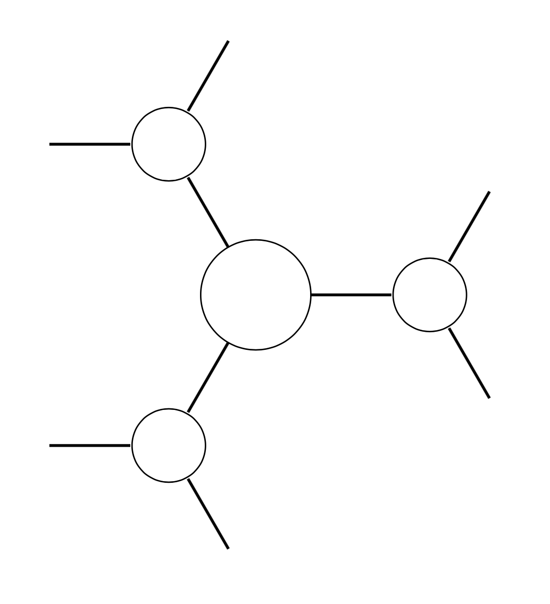
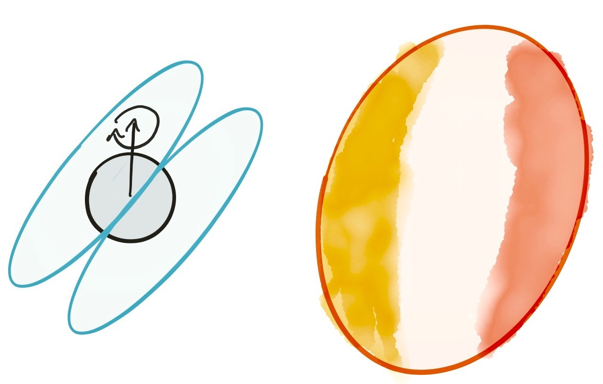

MESA is a software instrument developed by a team of astronomers for simulating 1D stellar evolution. My contributions have been:

PyTNR is a library that allows efficient contraction and decomposition of tensor networks and tensors. I developed this to help with a variety of my projects, ranging from analysis of turbulent flows to computing Bayesian evidence and understanding biophysical lattice models.

As part of my Caltech senior thesis I developed Acorn, a Python library for stellar structure and evolution. Acorn uses a basic equation of state (based on a code by Bohdan Paczyński) with support for modern opacity tables and supports modelling the envelopes of stars, both in steady state and out-of-equilibrium. The library supports a day-night circulation model I developed for my thesis as well as irradiation with varying deposition depth. The library does not include any details of nuclear reaction rates and so cannot be used to model the cores of stars.
During an internship in Professor Markovic’s lab at Johns Hopkins University, Justin Silverman and I developed several algorithms for analysing atomic force microscopy (AFM) images of carbon nanotubes. We were later awarded a patent for these algorithms [USPTO 13534428], and packaged them into the NanoImage library. The library produces robust statistics on length and aspect ratio distributions and automatically identifies and excludes sample defects. Requests for licensing should be directed to the Johns Hopkins Technology Transfer office [JHTV].